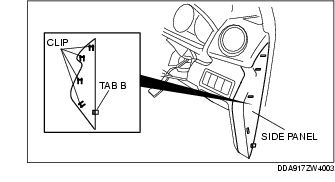

Side panel removal/installation 1. Disengage the clip and tabs A using a tape-wrapped flathead screwdriver. 2. Pull the side panel outward, then disengage tab B from the dashboard. 3. Install in the reverse order of removal.